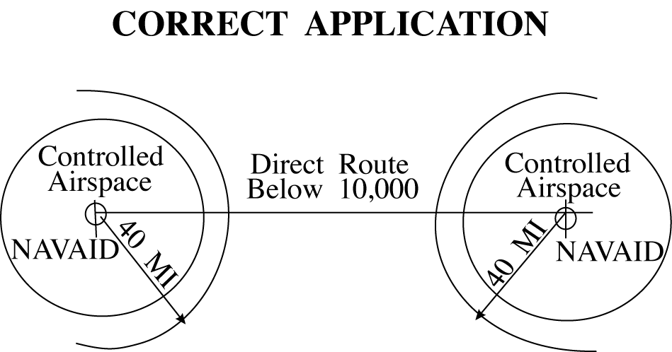
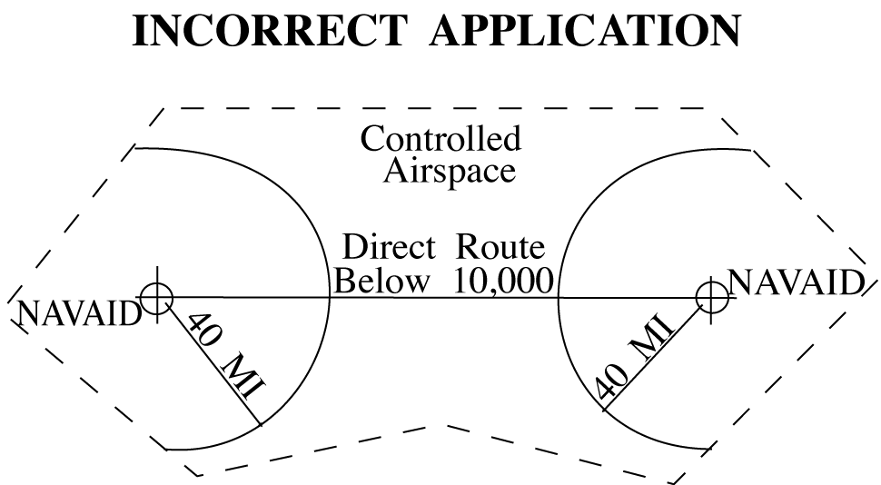

Chapter 4. IFR
Section 1. NAVAID Use Limitations
4-1-1. ALTITUDE AND DISTANCE LIMITATIONS
When specifying a route other than an established airway or route, do not exceed the limitations in the table on any portion of the route which lies within controlled airspace. (For altitude and distance limitations, see TBL 4-1-1, TBL 4-1-2, and TBL 4-1-3) (For correct application of altitude and distance limitations see FIG 4-1-1 and FIG 4-1-2.)
Class |
Altitude |
Distance |
|---|---|---|
T |
12,000 and below |
25 |
L |
Below 18,000 |
40 |
H |
Below 14,500 |
40 |
H |
14,500 - 17,999 |
100 |
H |
18,000 - FL 450 |
130 |
H |
Above FL 450 |
100 |
Class |
Power (watts) |
Distance |
|---|---|---|
CL |
Under 25 |
15 |
MH |
Under 50 |
25 |
H |
50 - 1,999 |
50 |
HH |
2,000 or more |
75 |
Height (feet) |
Distance |
|---|---|
4,500 |
10 (for glideslope) |
4,500 |
18 (for localizer) |
*Use the current flight check height/altitude limitations if different from the above minima. | |


4-1-2. EXCEPTIONS
Altitude and distance limitations need not be applied when any of the following conditions are met:
- Routing is initiated by ATC or requested by the pilot and radar monitoring is provided.
EXCEPTION-
GNSS equipped aircraft /G, /L, /S, and /V not on a random impromptu route. - Operational necessity requires and approval has been obtained from the Frequency Management and Flight Inspection Offices to exceed them.
- Requested routing is via an MTR.
4-1-3. CROSSING ALTITUDE
Use an altitude consistent with the limitations of the aid when clearing an aircraft to cross or hold at a fix.
4-1-4. VFR‐ON‐TOP
Use a route not meeting service volume limitations only if an aircraft requests to operate “VFR‐on‐top” on this route.
4-1-5. FIX USE
Request aircraft position reports only over fixes shown on charts used for the altitude being flown, except as follows:
- Unless the pilot requests otherwise, use only those fixes shown on high altitude en route charts, high altitude instrument approach procedures charts, and SID charts when clearing military turbojet single‐piloted aircraft.
- Except for military single‐piloted turbojet aircraft, unpublished fixes may be used if the name of the NAVAID and, if appropriate, the radial/course/azimuth and frequency/channel are given to the pilot. An unpublished fix is defined as one approved and planned for publication which is not yet depicted on the charts or one which is used in accord with the following:
- Unpublished fixes are formed by the en route radial and either a DME distance from the same NAVAID or an intersecting radial from an off‐route VOR/VORTAC/TACAN. DME must be used in lieu of off‐route radials, whenever possible.
- Except where known signal coverage restrictions exist, an unpublished fix may be used for ATC purposes if its location does not exceed NAVAID altitude and distance limitation, and when off‐route radials are used, the angle of divergence meets the criteria prescribed below.
- Do not hold aircraft at unpublished fixes below the lowest assignable altitude dictated by terrain clearance for the appropriate holding pattern airspace area (template) regardless of the MEA for the route being flown.
- When the unpublished fix is located on an off‐route radial and the radial providing course guidance, it must be used consistent with the following divergence angles:
- When holding operations are involved with respect to subparagraphs (b) and (c) below, the angle of divergence must be at least 45 degrees.
- When both NAVAIDs involved are located within 30 NM of the unpublished fix, the minimum divergence angle is 30 degrees.
- When the unpublished fix is located over 30 NM from the NAVAID generating the off‐course radial, the minimum divergence angle must increase 1 degree per NM up to 45 NM; e.g., 45 NM would require 45 degrees.
- When the unpublished fix is located beyond 45 NM from the NAVAID generating the off‐course radial, the minimum divergence angle must increase ½ degree per NM; e.g., 130 NM would require 88 degrees.
- Fixes contained in the route description of MTRs are considered filed fixes.
- TACAN‐only aircraft (type suffix M, N, or P) possess TACAN with DME, but no VOR or LF navigation system capability. Assign fixes based on TACAN or VORTAC facilities only.
- DME fixes must not be established within the no‐course signal zone of the NAVAID from which inbound holding course information would be derived.